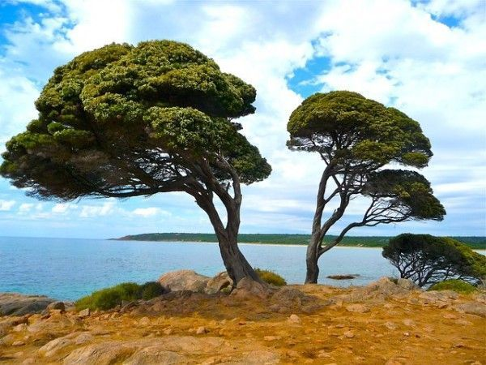
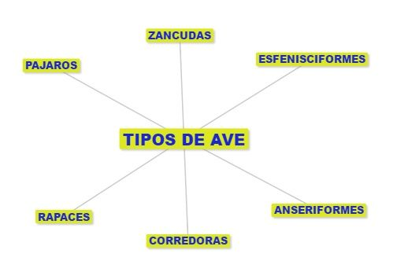

¿Qué es ecología?
La ecología es la rama de la biología que estudia la relación de los seres vivos con el medio que habitan y cómo influye éste en su distribución,
abundancia, biodiversidad, comportamiento, las interacciones entre diferentes especies y las modificaciones que pueden ocasionar en el medio. Su nivel
de estudio es a nivel de poblaciones, comunidades, ecosistemas y la biosfera en general.

La ecología se está revelando como una ciencia fundamental para intentar predecir los cambios que se están dando en los ecosistemas como respuesta a las
alteraciones humanas y por tanto conocer qué estudia la ecología y qué es, es muy importante para divulgar la importancia de esta ciencia y de sus
conclusiones.
¿Qué es un ave en peligro de extinción?
Un ave se considera en peligro de extinción, cuando todos los miembros con vida de dicha especie están en peligro de desaparecer. Esto se puede deber tanto
a la depredación directa sobre la especie como a la desaparición de un recurso del cual depende su vida, tanto por la acción del hombre, debido a cambios
en su hábitat, como producto de desastres naturales, o por cambios graduales del clima.
¿Cómo se relaciona la ecología con las aves en peligro de extinción?
Al extinguirse una especie de ave se ve alterado todo un ecosistema completo, ya que las aves cumplen un papel muy importante dentro de un ecosistema; y
esto trae como consecuencia: un desequilibrio en la biodiversidad, la falta de balance en la proliferación de otras especies aún existentes, ya sea plantas,
animales o ambos. Asimismo al verse afectado el ecosistema, también se ve afectado el ser humano y el planeta como tal.
¿Qué es un ave?
Las aves son vertebrados que se caracterizan principalmente por sus adaptaciones al vuelo. Sus huesos son huecos y modificados, lo que es más evidente en sus
extremidades anteriores, en las que se fusionan formando las alas. Su cuerpo está cubierto de plumas, son endotérmicos (mantienen su temperatura constante mediante el metabolismo)
y presentan sacos de aire internos ubicados en la zona del abdomen. Estos animales comen constantemente para mantener su alto metabolismo necesario para el vuelo. Su lengua está
modificadas según su alimento, puesto que todas las aves carecen de dientes (Miller y Harley, 1996). Tipos de aves

Las rapaces
Este grupo de aves posee picos afilados y patas poderosas, provistas de grandes garras, con las que cazan activamente a sus presas. Algunas son de vida
diurna corno el águila, el halcón o el cernícalo, mientras que otras son nocturnas como el búho, la lechuza y el cárabo. Ejemplos de rapaces tenemos águilas,
halcones, lechuzas, búhos, cernícalos.
Los pájaros
Son de pequeño tamaño, con unas patas delgadas y cortas, y suelen vivir en las zonas boscosas como es el caso del carbonero o el petirrojo o incluso
en zonas urbanas como el estornino, el gorrión y el hornero. Como ejemplo tenemos al gorrión, estornino, carbonero, petirrojo, pinzón.
Las zancudas
Son aves esbeltas, con el pico y las patas alargadas, como por ejemplo la cigüeña, la garza y la grulla. Ejemplos de zancudas tenemos. cigüeñas, garzas,
grullas, ibis.
Las corredoras
De gran tamaño, las aves corredoras han perdido la capacidad de volar, pero pueden correr velozmente gracias a sus potentes patas. Entre ellas podemos citar
el avestruz, el ñandú o el casuario. Otros ejemplos son el avestruz, ñandú, casuario.
Las anseriformes
Tienen el pico aplanado y los dedos de las palas unidos por membranas lo que les permite nadar sobre el agua. A este grupo pertenecen el pato, el ganso,
la oca y el cisne. Como ejemplos tenemos patos. ocas, gansos, cisnes.
Las esfenisciformes
Son aves con las extremidades anteriores convertidas en aletas que utilizan para bucear en el agua, por lo que han perdido también la capacidad de volar.
El integrante más popular de este grupo es el pingüino. Como ejemplos tenemos pingüinos, pájaros bobos.
Gallinaceas
Tienen pico corto pero fuerte, y patas robustas. Sus alas son pequeñas y uñas preparadas para escarbar. Su alimentación consta principalmente de granos.
En este tipo se incluyen la gallina, el codorniz, el faisán, etc.
 Aves en peligro de extinción
Aves en peligro de extinción